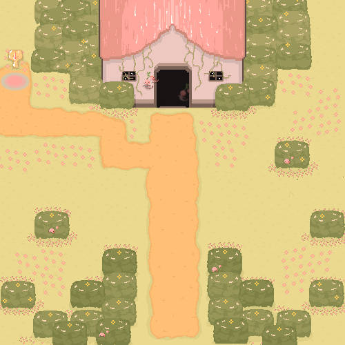
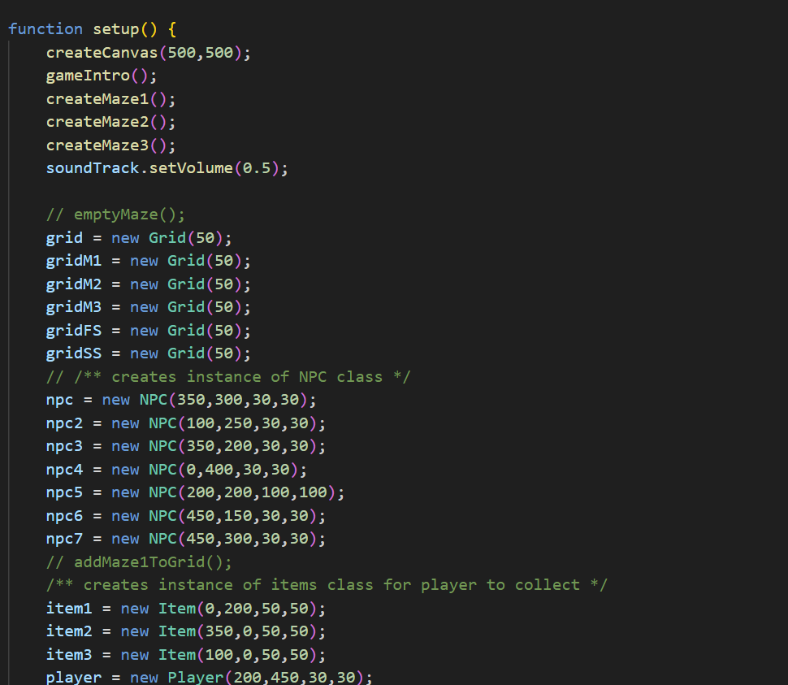
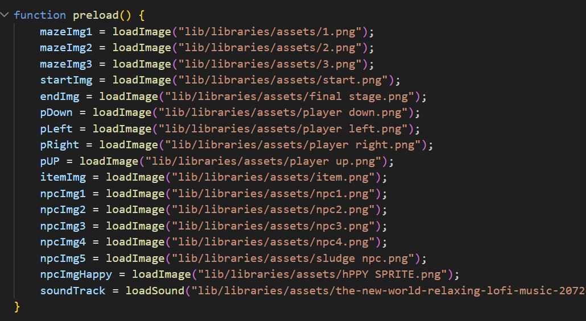

Winner: Audience Favourite — Interactive Media Showcase 2024
Spirit Gardens
A pixel art top-down maze game with custom pixel art assets.

Project Overview
Spirit Gardens follows the story of a young girl who discovers her home has become overrun with forest spirits. To discover the reason why the spirits are now afraid of their home, the player must adventure through the forest maze in search of answers. This game uses a top down format and takes inspiration from early entries in the Pokémon series in its pixel art style.
The Technical Challenges & Solutions
Hurdle 1: Preventing Wall Clipping
The Problem: When the environment shifted based on a state boolean, the player would clip through walls. This happened because player movement was calculated using outdated collision maps before the game engine finished updating the active maze layout for that state.
The Solution: I re-ordered the execution loop so that the state boolean resolves and updates the active environment boundaries first. This ensures that player movement and collision checks are always calculated against the correct, active wall layout.
Hurdle 2: Script Architecture
The Problem: The game required careful structure to guarentee the functionality would perform as expected. Before implementing a more rigid structure and organizing the script, it was difficult to navigate and accurately detect problems.
The Solution: Each section was managed in external scripts, providng a simpler more efficent solution and clean structure which imrpoved perfomance and management of the development.
Asset Development Gallery
Swipe through the project assets. Hover over any card to reveal the technical logic, implementation details, and project necessity.

Fig 1. Final environment design.

Fig 2. Establishing multiple mazes to populate during game progression.

Fig 3. Utilizing the preload() function.
UX Architecture & User Research
Designing for a browser-based canvas demanded moving away from complex player interfaces. The target user group required low cognitive load interfaces that mirrored retro arcade-style physical intuitions.
1. Input Ergonomics
Designing a browser-based keyboard layout demanded moving away from complex multi-key inputs. The target user group required low cognitive load controls that mirrored classic arcade layouts. I mapped movement to standard arrow keys, restricting the physical gameplay zone to a natural, comfortable one-hand rest position.
2. Visual Affordance & Level Progression
To ensure clear progression feedback as the player advances through sequential mazes, I hand-drew distinct asset sets using contrasting color palettes for each level. By mapping unique color profiles to each maze state, the interface provides immediate visual affordance—instantly signaling a successful level transition and giving the player a clear psychological sense of progression.
3. User Testing Insights
Observational user testing revealed significant friction regarding navigation and spatial awareness within the hand-drawn layouts. Because the custom art lacked rigid grid lines, players frequently misjudged wall boundaries and struggled to locate entry/exit thresholds. This insight highlighted the critical need for explicit visual anchors, proving that stylized aesthetic choices must always be balanced with clear geometric signposting to prevent player frustration.
Reflection & Further Development
An honest evaluation reveals the technical hurdles and design limits of the current prototype alongside a roadmap to fully realize our project aims.
The Reality Check:Visual consistency within the art style was achieved however, there was no variety in audio features and the soundscape of each level.
Further Development: Break down each level/tier of the forest and introduce different sounds to build a strong auditary profile for each area.
The Reality Check: This was achieved at a basic level however further research and optimization must be done to ensure identical frame rates and maximum performance.
Further Development: Currently the game runs in a set canvas environment which could be furhter adapted to scale responsively and account for different window sizes rather than forcing a fixed screen view of the gameplay that restricts the players ability to adapt the game to their screen layout.
The Reality Check: The game operates successfully managing the player controls and behaviour through a seperate script. The controls follow a classic arrowkey set up for movement and access to new areas happens automaticlaly through collision with defined 'portals' and entrance locations for new mazes.
Further Development: One key press currently results in a singular step forward by a defined pixel rate and the game is currently unresponsive to holding down the arrow key to move continuosly in a singulay direction which should be revised to avoid frustrating the player.